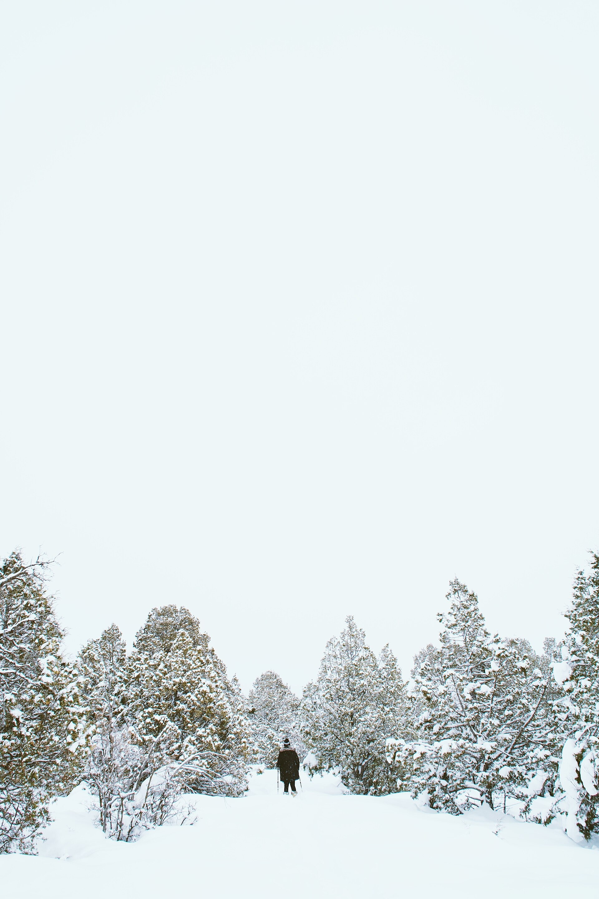

¿No
encajo?
encajo?
Una novela, un cuento y una canción para hablar de soledad, ansiedad e identidad.

Todos hemos sentido alguna vez que sobramos: en un salón, en un grupo de WhatsApp, en una fiesta. En la adolescencia pega más fuerte, y casi nunca se dice en voz alta.
Según la OMS, uno de cada siete jóvenes de 10 a 19 años vive con un problema de salud mental. Esta revista no diagnostica a nadie ni reemplaza a un profesional. Solo quiere ayudarte a ponerle nombre a lo que sientes, y lo hacemos con tres historias: una novela, un cuento y una canción.
Si al terminar le preguntas a alguien «¿cómo estás, de verdad?» y te quedas a escuchar, ya cumplimos.
El equipo editorial
La adolescencia trae muchas decisiones y muchas dudas: con quién estar, quién ser, cómo mostrarse. Según la OMS, uno de cada siete jóvenes de 10 a 19 años vive con un problema de salud mental, y entre 17 y 21 % de quienes tienen 13 a 29 años dice sentirse solo.
En México, el INEGI encontró en 2021 que 19.3 % de los adultos tenía síntomas de ansiedad severa. (Es un dato de adultos, no de adolescentes.)
Novela: El guardián entre el centeno, J. D. Salinger
Cuento: El patito feo, H. C. Andersen
Canción: Little Wonders (La familia del futuro), Rob Thomas
La OMS la define como el estado que nos permite enfrentar el estrés de la vida, aprender, trabajar y convivir. No funciona como interruptor entre «bien» y «mal»: cambia con los días, con la gente que te rodea y con lo que vives.
Influyen tus herramientas para manejar lo que sientes, tu entorno (familia, amistades, escuela) y la sociedad (violencia, desigualdad). En la adolescencia pesan la presión por encajar, el acoso y la búsqueda de identidad.
No son un diagnóstico. Si duran semanas, platícalo con alguien de confianza.
Todos sentimos ansiedad. Es la alarma que se prende antes de un examen o una exposición: el corazón se acelera, la mente da vueltas y, cuando pasa la situación, baja.
Puede ser un trastorno cuando la alarma no se apaga: el miedo es intenso, dura meses y empieza a quitarte cosas, como el sueño, la escuela o las amistades. Aparecen palpitaciones, sudor, náuseas, problemas para concentrarte y ganas de evitar lugares o personas.

| Ansiedad normal | Posible trastorno | |
|---|---|---|
| Duración | Pasa con la situación | Meses |
| Intensidad | Proporcional | Excesiva y difícil de controlar |
| Efecto en tu vida | Incomoda, pero sigues | Te hace dejar actividades |
Tiempo que eliges para pensar, leer o descansar.
La brecha entre las conexiones que quieres y las que tienes. Pasa aun rodeado de gente.
Tener pocos contactos o espacios donde convivir.
Cuando alguien se siente excluido y nadie lo nota, tiende a alejarse más. La empatía rompe ese círculo: preguntar, escuchar sin juzgar. ¿Quién podría sentirse así en tu salón hoy?
Preguntarte quién eres no es una enfermedad; es parte de crecer. Erik Erikson decía que en esta etapa probamos gustos, papeles y grupos hasta encontrar los que se sienten propios. James Marcia lo resumió en dos pasos: explorar y comprometerse.
El problema aparece cuando el grupo premia parecerse y castiga la diferencia. La OMS advierte que adolescentes de minorías étnicas o sexuales, con discapacidad o autismo sufren más estigma y exclusión. Eso dice más del grupo que de la persona.
Abre tu feed. ¿Qué cuentas te hacen sentir que deberías ser otra persona? ¿Cuáles te ayudan a conocerte? La OMS señala que los medios pueden agrandar la distancia entre lo que vives y lo que crees que deberías vivir.


No hace falta cambiar tu vida en un día. La OMS recuerda que dormir con regularidad, moverte y aprender a manejar emociones protege en esta etapa. Elige una o dos acciones, pruébalas dos semanas y ajusta.

Nivel · AplicarEl tratamiento con más evidencia, según la OMS, es la terapia psicológica de tipo cognitivo-conductual. Mientras tanto, hay hábitos que ayudan a bajar la tensión. Ninguno promete que la ansiedad desaparezca, y funcionan mejor como práctica diaria que como salida de emergencia.
| Qué puedes hacer | Para qué sirve | Su límite |
|---|---|---|
| Respiración lenta | Baja la tensión del cuerpo | Calma el momento, no la causa |
| Moverte un poco cada día | Ayuda al ánimo y al sueño | No basta si hay un trastorno |
| Atención plena, unos minutos | Notar pensamientos sin engancharte | Requiere constancia |
| Evitar alcohol y otras drogas | Pueden empeorar la ansiedad | Si ya hay consumo, pide ayuda |
Línea de la Vida: 800 911 2000, gratuita y 24 horas. Emergencias: 911. La OMS también ofrece una guía gratuita de ejercicios de pocos minutos: Hacer lo que importa en tiempos de estrés.

Si te agotan los grupos grandes: prefiere vínculos uno a uno.
Si tienes poco tiempo o dinero: citas cortas y actividades gratuitas.
Si sufres discriminación: busca comunidades y adultos aliados; la OMS reconoce que enfrentas barreras extra.
Si la soledad viene con tristeza que no se va o ideas de hacerte daño, no la cargues solo. Llama a la Línea de la Vida: 800 911 2000 (24 h, gratuita) o al 911 en una emergencia.

Escribe cinco minutos al día sobre cómo te sentiste y por qué.
Honestidad, lealtad, curiosidad: son tu brújula cuando el grupo empuja hacia otro lado.
«Esa broma no me da risa» o «hoy no voy» también son formas de cuidarte.
Muestran versiones editadas de la vida de otros. Pregúntate quién gana con lo que ves.
Tener dudas sobre quién eres no es un diagnóstico. Si el malestar es muy intenso o dura mucho, hablarlo con un profesional ayuda.

Holden Caulfield tiene 16 años y acaba de ser expulsado de su escuela por reprobar cuatro de cinco materias. En vez de volver a casa, deambula por Nueva York buscando a alguien con quien hablar. Al final lo logra con su hermana Phoebe, en el carrusel.
Soledad. Holden llama a varias personas, pero siempre encuentra algo que lo aleja. Busca contacto y lo sabotea: se siente solo aun rodeado.
Pertenencia e identidad. No se reconoce en ninguna escuela. Su fantasía de ser «el guardián entre el centeno», el que evita que los niños caigan, muestra quién quiere ser: alguien que protege lo que él siente perder.
| Defensa | En la novela |
|---|---|
| Proyección | Llama «farsantes» a casi todos y los desprecia antes de que lo rechacen. |
| Negación | Habla poco de la muerte de su hermano Allie; la noche en que murió rompió los vidrios de la cochera. |
| Fantasía | Sueña con irse a una cabaña o a un rancho, lejos de todos. |
Casi nadie le pregunta cómo está: su maestro le habla de «las reglas del juego», un conocido le sugiere ir con un psiquiatra. Solo Phoebe le pregunta qué le gusta de verdad. Lectura del equipo, no diagnóstico del personaje; mecanismos según A. Freud (1936/1966) y trama contrastada con GradeSaver (s. f.).

Una cría nace entre patos, pero es distinta. Se burlan de ella, la maltratan y huye. Pasa un invierno duro, sola. En primavera ve unos cisnes, se acerca esperando que la rechacen y, al mirarse en el agua, descubre que también es un cisne.
Lo que muestra. El rechazo castiga la diferencia, y el alivio llega al encontrar un grupo que nos reconoce. A veces el problema no es ser «raro», sino estar en el lugar equivocado.
Nivel · AnalizarLas burlas y los picotazos son estigmatización: convertir una diferencia en motivo de castigo. La OMS advierte que el estigma aumenta la vulnerabilidad de quienes ya viven una condición de salud mental.
El patito siempre valió lo mismo; quienes cambiaron de opinión fueron los demás. Un entorno sano acepta a los patitos antes de que cambien, y la responsabilidad del rechazo es de quien rechaza.

«Little Wonders» (en español, «Instantes de maravilla») la grabó Rob Thomas para Meet the Robinsons (2007), estrenada en Hispanoamérica como La familia del futuro. El video de la consigna es su escena final. La película sigue a Lewis, un niño huérfano e inventor que enfrenta fracasos y busca una familia. Para nosotros, la canción consuela: invita a soltar lo que pesa y a valorar lo pequeño, sin prometer que todo se arregle.
Las tres parten de alguien que siente que no encaja y muestran que la soledad pesa más en silencio. La novela no resuelve nada; el cuento resuelve con una transformación que premia la belleza; la canción no cambia el problema, pero acompaña. Hoy se ve igual: burlas en el salón y en redes, presión por encajar y miedo a pedir ayuda.
| Novela | Cuento | Canción | |
|---|---|---|---|
| Exclusión | No logra acercarse a nadie | Burlas por su apariencia | Un niño que busca familia |
| Cómo responde | Ironía, desprecio, mentira | Huye y aguanta solo | Aprende a soltar |
| Qué ayuda | Hablar con Phoebe | Encontrar a los suyos | Compañía y momentos pequeños |
| Desenlace | Abierto, esperanza frágil | Aceptación condicionada | Calma y aceptación |
¿Qué necesitamos para pertenecer sin dejar de ser nosotros? Tres cosas: alguien que escuche, un lugar donde ser distinto no cueste, y tiempo para construir quién eres. Holden necesitaba lo primero, el patito lo segundo y la canción nos recuerda lo tercero. Empieza por preguntar a alguien cómo está.
A quien hoy se siente afuera:
No sé tu nombre, pero sé que hoy pesa. Quizá estás en un salón lleno de gente y sientes que nadie te ve. Quiero decirte algo simple: no estás roto. Sentirte solo no te hace menos, y tu forma de ser no es un error que haya que corregir.
A veces es más fácil alejarte antes de que te alejen. Eso no te hace malo; solo intentas protegerte. Pero ojalá no tengas que hacerlo solo.
No tienes que contarlo todo. Empieza con una frase: «hoy no me siento bien». Díselo a alguien de confianza. Y si te cuesta, hay personas que escuchan a cualquier hora: la Línea de la Vida, 800 911 2000.
Con cariño,
El Equipo 4

Andersen, H. C. (1843). El patito feo [Cuento]. Arbolabc. https://arbolabc.com/cuentos-clasicos-infantiles/el-patito-feo
Anderson, S. J. (Director). (2007). Meet the Robinsons [Película]. Walt Disney Pictures; Walt Disney Animation Studios.
Neo DD. (s. f.). La Familia Del Futuro (2007) – Canción final «Instantes de Maravilla / Little Wonders» CLIP [Video]. YouTube. https://www.youtube.com/watch?v=vC2u3dv7reU
Salinger, J. D. (1951). The catcher in the rye. Little, Brown and Company.
Thomas, R. (2007). Little wonders [Canción]. En Meet the Robinsons: Original motion picture soundtrack. Walt Disney Records.
Comisión Nacional de Salud Mental y Adicciones. (s. f.). La Línea de la Vida, te escucha. Secretaría de Salud. https://www.gob.mx/conasama/articulos/linea-de-la-vida-800-911-2000
Erikson, E. H. (1968). Identity: Youth and crisis. W. W. Norton.
Freud, A. (1966). The ego and the mechanisms of defence (ed. rev.). International Universities Press. (Obra original publicada en 1936)
GradeSaver. (s. f.). El guardián entre el centeno: Resumen. https://www.gradesaver.com/el-guardian-entre-el-centeno/study-guide/summary
Instituto Nacional de Estadística y Geografía. (2021, 14 de diciembre). Encuesta Nacional de Bienestar Autorreportado (ENBIARE) 2021 (Comunicado de prensa núm. 772/21). https://www.inegi.org.mx/contenidos/saladeprensa/boletines/2021/EstSociodemo/ENBIARE_2021.pdf
Marcia, J. E. (1966). Development and validation of ego-identity status. Journal of Personality and Social Psychology, 3(5), 551–558. https://doi.org/10.1037/h0023281
Organización Mundial de la Salud. (2020). Doing what matters in times of stress: An illustrated guide. https://www.who.int/publications/i/item/9789240003927
Organización Mundial de la Salud. (2025, 1 de septiembre). Mental health of adolescents [Hoja informativa]. https://www.who.int/news-room/fact-sheets/detail/adolescent-mental-health
Organización Mundial de la Salud. (2025, 30 de junio). Social connection linked to improved health and reduced risk of early death [Comunicado de prensa]. https://www.who.int/news/item/30-06-2025-social-connection-linked-to-improved-heath-and-reduced-risk-of-early-death
Organización Mundial de la Salud. (2026, 11 de septiembre). Mental health [Hoja informativa]. https://www.who.int/news-room/fact-sheets/detail/mental-health-strengthening-our-response
Organización Mundial de la Salud. (2026, 15 de septiembre). Anxiety disorders [Hoja informativa]. https://www.who.int/news-room/fact-sheets/detail/anxiety-disorders
Wikipedia. (s. f.). Meet the Robinsons. https://en.wikipedia.org/wiki/Meet_the_Robinsons
Pág. 1. Niti K. inhalexhale. «Quiet Moments (Unsplash)». CC0. Wikimedia Commons.
Pág. 2. Joshua Sampson. «Rain Drops On The Window (68419527)». CC BY 3.0. Wikimedia Commons.
Pág. 3. Philippe Mignot photofil. «Misty Monochromatic Walks (Unsplash)». CC0. Wikimedia Commons.
Pág. 4. Léa Dubedout leadbt. «Young woman in leather jacket (Unsplash)». CC0. Wikimedia Commons.
Pág. 5. Eli DeFaria elidefaria. «Woman lying on concrete (Unsplash)». CC0. Wikimedia Commons.
Pág. 6. blm_mtdks. «Lonely Park Bench (49497870088)». Public domain. Wikimedia Commons.
Pág. 7. Christopher Campbell chrisjoelcampbell. «Brunette woman portrait (Unsplash)». CC0. Wikimedia Commons.
Pág. 8. Tookapic. «Pen-writing-notes-studying». CC0. Wikimedia Commons.
Pág. 9. Kelly Sikkema kelsikkema. «Walking alone (Unsplash)». CC0. Wikimedia Commons.
Pág. 10. Shixart1985. «Close up parent holding hands of little kid girl». CC BY 2.0. Wikimedia Commons.
Pág. 11. Martin Miranda martinmiranda. «Brunette woman near brick wall (Unsplash)». CC0. Wikimedia Commons.
Pág. 12. Jim.henderson. «Central Park Carousel snow jeh». CC0. Wikimedia Commons.
Pág. 13. Rhododendrites. «Mute swan and cygnets (30899)». CC BY-SA 4.0. Wikimedia Commons.
Pág. 14. Janko Ferlič thepootphotographer. «Stand by the fire (Unsplash)». CC0. Wikimedia Commons.
Pág. 15. Greg Rakozy grakozy. «Alone in the snow (Unsplash)». CC0. Wikimedia Commons.
Todas son fotografías reales de Wikimedia Commons; los enlaces llevan a su página de origen. Las fotos CC BY y CC BY-SA se recortaron para esta publicación escolar sin fines de lucro. Ninguna persona retratada es presentada como paciente ni se le atribuye diagnóstico alguno.
.jpg){kind=link}
.jpeg){kind=link}
.jpg){kind=link}
.jpg){kind=link}
.jpg){kind=link}
.jpg){kind=link}
.jpg){kind=link}

.jpg){kind=link}

.jpg){kind=link}

.jpg){kind=link}
.jpg){kind=link}
.jpg){kind=link}